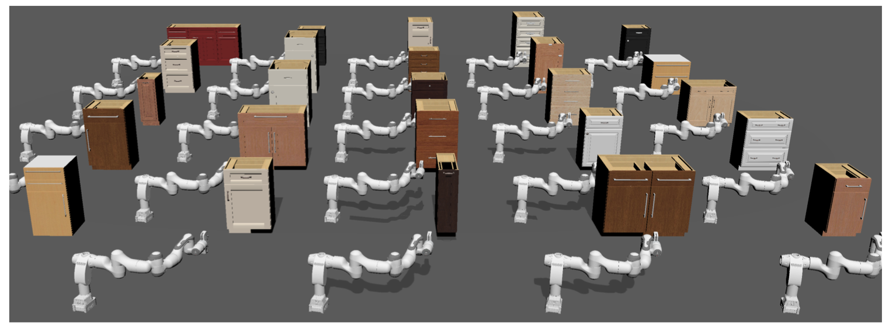

Comparison with Existing Works

Approximate convex decomposition aims to decompose a 3D shape into a set of almost convex components, whose convex hulls can then be used to represent the input shape. It thus enables efficient geometry processing algorithms specifically designed for convex shapes and has been widely used in game engines, physics simulations, and animation. While prior works can capture the global structure of input shapes, they may fail to preserve fine-grained details (e.g., filling a toaster's slots), which are critical for retaining the functionality of objects in interactive environments. In this paper, we propose a novel method that addresses the limitations of existing approaches from three perspectives: (a) We introduce a novel collision-aware concavity metric that examines the distance between a shape and its convex hull from both the boundary and the interior. The proposed concavity preserves collision conditions and is more robust to detect various approximation errors. (b) We decompose shapes by directly cutting meshes with 3D planes. It ensures generated convex hulls are intersection-free and avoids voxelization errors. (c) Instead of using a one-step greedy strategy, we propose employing a multi-step tree search to determine the cutting planes, which leads to a globally better solution and avoids unnecessary cuttings. Through extensive evaluation on a large-scale articulated object dataset, we show that our method generates decompositions closer to the original shape with fewer components. It thus supports delicate and efficient object interaction in downstream applications. We will release our implementation to facilitate future research.
From left to right, the concavity thresholds are set to 0.02, 0.04, 0.1, and 0.2, respectively.
An important application of convex decomposition is to provide collision shapes for physics simulators. We find that using the collision shapes by our method preserves fine-grained details of the handles, while the collision shapes by V-HACD fill the holes of the handles even if a small threshold is used. We thus enable the robot to have a higher success rate in opening the drawer.
@article{wei2022approximate,
title={Approximate Convex Decomposition for 3D Meshes with Collision-Aware Concavity and Tree Search},
author={Wei, Xinyue and Liu, Minghua and Ling, Zhan and Su, Hao},
journal={arXiv preprint arXiv:2205.02961},
year={2022}
}